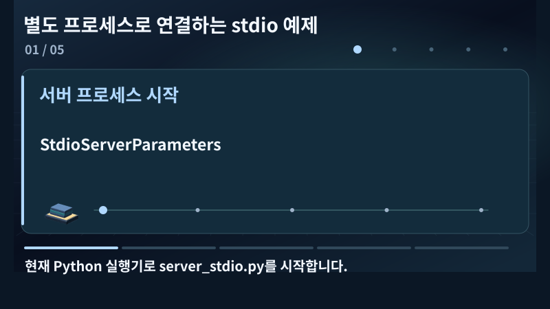
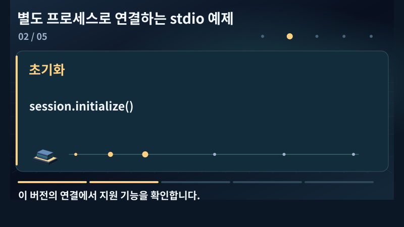
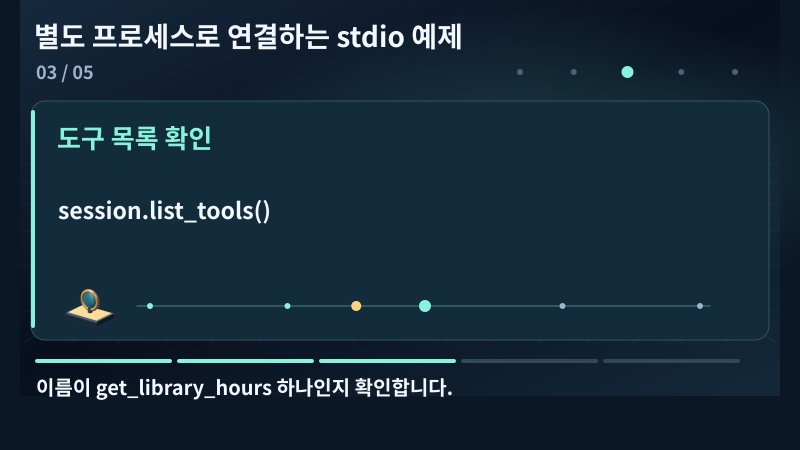
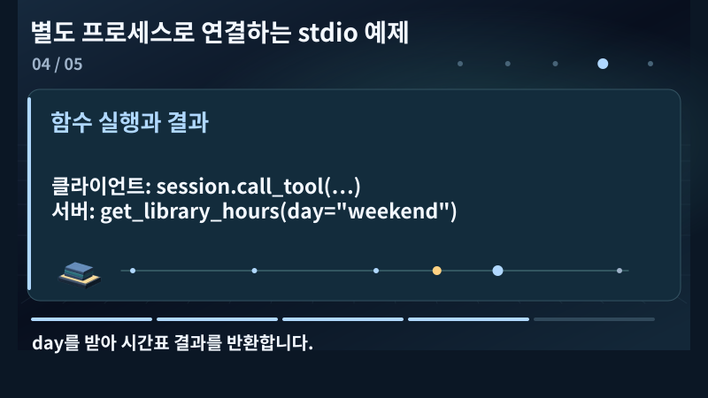
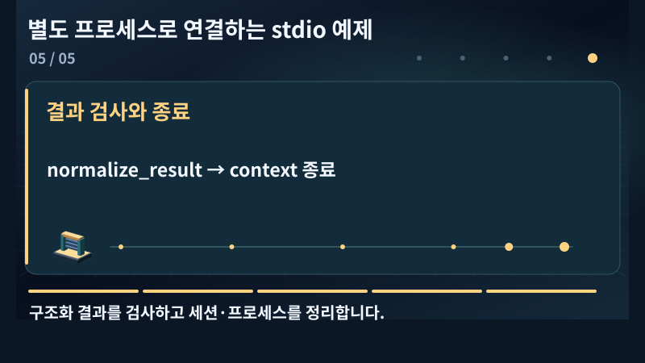

Python 함수를 MCP 도구로 제공하기
도서관 시간표 함수는 이미 있습니다. 다른 프로그램에서 함수의 이름과 인자를 먼저 알아내고 같은 결과를 받을 수 있을까요? MCP 서버에 함수를 등록하고, 실제 MCP 클라이언트에서 목록 조회와 호출을 차례로 실행합니다.
수업 노트북
실행을 확인한 커널은 Python 3.12.15입니다. 예제에 사용한 외부 패키지는 mcp 1.30.0입니다.
도구로 등록한 시간표 함수
‘서버 함수’에서 출발해 ‘도구 등록’를 거친 뒤 ‘호출 가능’가 되는 순서를 따라가세요.
서버에 등록한 시간표 함수가 호출 가능한 도구가 됩니다.
서버는 조회 함수를 소유합니다. 클라이언트는 서버의 목록에서 어떤 도구를 부를 수 있는지 확인합니다. 이 노트북은 MCP Python SDK의 메모리 전송을 사용합니다. 별도 프로세스를 띄우는 stdio와 외부 주소에 연결하는 HTTP는 장별 참고 구현에서 다룹니다.
셀 01 · 제공 셀 · 서버와 시간표 등록
수업용 MCP 1.x 커널에서 실행합니다. @server.tool()이 함수의 이름, 설명, day의 허용값을 도구 명세에 반영합니다.
직접 함수 호출에서는 반환한 운영 시간을 확인합니다. SDK 메모리 전송에서는 세션을 통해 받은 도구 결과를 읽습니다. 별도 프로세스로 서버를 띄우는 stdio는 또 다른 경로입니다. 메모리 전송의 성공만으로 stdio 연결까지 성공했다고 기록하지 않습니다.
from typing import Literal
from mcp.server.fastmcp import FastMCP
from mcp.shared.memory import create_connected_server_and_client_session
server = FastMCP("course-library-v1", log_level="ERROR")
hours = {"weekday": "09:00~18:00", "weekend": "10:00~16:00"}
@server.tool()
def get_library_hours(day: Literal["weekday", "weekend"]) -> dict[str, str]:
"""가상 도서관의 평일 또는 주말 운영 시간을 조회합니다."""
return {"day": day, "hours": hours[day], "source": "수업용 가상 도서관"}
print(get_library_hours('weekend')['hours'])실행 결과
10:00~16:00
10:00~16:00은 Python 함수를 직접 호출한 결과입니다. 여기까지는 아직 클라이언트가 서버에 요청한 적이 없습니다.
셀 02 · 클라이언트에서 도구 목록 조회
연결 도우미가 세션을 열고 초기화합니다. 목록 조회에는 day를 보내지 않습니다.
async with create_connected_server_and_client_session(server) as session:
catalog = await session.list_tools()
print(catalog.tools[0].name)실행 결과
get_library_hours
get_library_hours가 보입니다. 이름을 알았지만 아직 운영 시간은 받지 않았습니다. async with가 끝나면 이 세션도 닫힙니다.
서버에서 실행한 주말 시간 조회
‘weekend’에서 출발해 ‘서버 조회’를 거친 뒤 ‘10:00~16:00’가 되는 순서를 따라가세요.
weekend를 보내면 주말 시간을 조회합니다.
call_tool은 도구 이름과 인자 사전을 보냅니다. await 뒤에는 서버가 보낸 결과가 돌아옵니다. 아래처럼 structuredContent를 읽으면 텍스트를 다시 파싱할 필요가 없습니다.
셀 03 · 주말을 요청해 구조화 결과 받기
호출을 열린 세션 안에 두고, 결과가 어느 요일에 대한 것인지 확인하세요.
async with create_connected_server_and_client_session(server) as session:
reply = await session.call_tool("get_library_hours", {"day": "weekend"})
print(reply.structuredContent["day"], reply.structuredContent["hours"])실행 결과
weekend 10:00~16:00
weekend와 10:00~16:00이 함께 돌아옵니다. 입력의 요일이 결과의 요일과 맞는지 대조할 수 있습니다.
과제 04 · 평일 시간표를 MCP로 조회하기
인자 하나를 바꾸어 평일 운영 시간을 읽으세요. 이름 목록 조회만으로 끝내지 마세요.
# 새 세션에서 weekday를 요청하고 hours를 출력하세요.풀이와 실행 결과 보기
async with create_connected_server_and_client_session(server) as session:
reply = await session.call_tool('get_library_hours', {'day': 'weekday'})
print(reply.structuredContent['hours'])실행 결과
09:00~18:00
09:00~18:00입니다. 수업용 메모리 전송 안에서 클라이언트와 서버가 실제로 교환한 값입니다. 외부 도서관의 현재 운영 시간을 확인한 결과는 아닙니다. 별도 프로세스를 쓰는 경우는 보충 그림의 첫 단계인 서버 시작부터 따라가세요.
다시 풀어 보기
함수 이름이 목록에 없을 때는 등록과 목록 조회를, 올바른 이름이 있는데 운영 시간이 틀리면 인자와 실제 시간표 함수를 먼저 살펴보세요.
관련 개념 더 읽기
앞에서 만든 호출 기록과 같은 함수를 가져오기
16일에는 모델의 function_call을 읽고 이름과 arguments를 검사한 뒤 get_library_hours를 실행했습니다. 그때의 주말 값은 10:00~16:00이고 source는 수업용 가상 도서관이었습니다. 오늘은 시간표를 바꾸지 않고 함수를 다른 프로세스에서도 부를 수 있도록 제공하는 방법을 배웁니다.
| 앞의 개념 | 오늘의 위치 | 변하지 않는 점 |
|---|---|---|
| 6일 요청·응답 오류 | Client 연결과 결과 읽기 | 연결 실패와 내용 오류를 구분 |
| 16일 도구 인자·결과 | 같은 get_library_hours | day/hours/source 유지 |
| 55일 도구 등록·모델 왕복 | 다음 장의 에이전트 연결 | 모델 요청이 실제 실행과 다름 |
Host·Client·Server는 서로 다른 책임입니다
Host는 사용자가 질문하고 결과를 받는 애플리케이션입니다. 그 안의 Client는 특정 MCP Server와 연결해 목록을 요청하고 도구를 호출합니다. Server는 어떤 도구를 제공하는지 알려 주고 요청받은 Python 함수를 실행합니다. 이름이 세 개라고 컴퓨터가 반드시 세 대 필요한 것은 아닙니다.
stdio 실습은 Host 쪽 프로그램과 서버가 같은 컴퓨터의 서로 다른 프로세스로 동작하는 경우입니다. 하나의 Host가 여러 서버를 쓰려면 연결을 맡는 Client도 여러 개 둘 수 있습니다. 모델이 Server에 직접 Python 코드를 보내 실행하는 구조로 이해하지 마세요. 애플리케이션이 요청과 허용한 도구를 연결합니다.
통신 전에 같은 Python 결과부터 확인하기
library_tool.py의 함수는 파일·계정·네트워크를 읽지 않고 작은 시간표를 반환합니다. 함수 결과를 먼저 고정해야 나중에 값이 달라졌을 때 통신 문제인지 시간표 변경인지 구분할 수 있습니다. day는 요일 이름 전체가 아니라 weekday 또는 weekend라는 두 분류입니다.
이 장의 필수 실행은 설치 없이 가능한 로컬 검사입니다. 먼저 examples 폴더에 library_tool.py와 check_local.py가 있는지 확인하고 Python 3.12 환경을 선택하세요. ModuleNotFoundError가 나면 현재 폴더와 파일 저장 위치부터 확인합니다. 로컬 함수 검사에 MCP 설치를 먼저 요구하지 않습니다.
검사 8개는 테스트 메서드 수이며 일부 메서드는 여러 잘못된 값을 순회합니다. 통과 횟수를 실제 서버 연결 횟수로 바꾸어 적지 않습니다. local_demo.py가 만든 파일의 평일·주말 결과를 제공 local-tool-results.json과 비교하세요.
도구 이름·인자 약속·실제 검사를 나누기
도구 명세는 이름, 용도 설명, 입력 모양을 Client에 알려 줍니다. get_library_hours라는 이름만 있어서는 주말인지 평일인지 알 수 없으므로 day가 필요합니다. JSON의 true와 문자열 "weekend"는 서로 다른 값입니다.
타입 표기와 명세가 있다고 모든 호출이 올바른 것은 아닙니다. 제공 Client와 순수 함수는 day 하나만 받는지, 값이 지원 목록 안인지 다시 검사합니다. 잘못된 요청을 weekday로 자동 변환하면 오류가 정상 조회로 바뀌므로 이 예제는 거부합니다. SDK 서버 자체의 추가 필드 처리까지 실제로 검사한 것은 아닙니다.
| 인자 | Client/순수 함수 경계 | 이유 |
|---|---|---|
| {"day":"weekend"} | 통과 | 지원하는 문자열 |
| {"day":true} | 거부 | bool은 day 값이 아님 |
| {"day":"holiday"} | 거부 | 시간표에 없는 분류 |
| {"day":"weekend","extra":1} | 거부 | 필드 약속이 다름 |
FastMCP는 기존 함수를 어떻게 노출하나요?
server_stdio.py는 별도의 새 시간표를 만들지 않습니다. library_tool의 함수를 lookup이라는 이름으로 가져오고, @server.tool() 아래의 get_library_hours가 그 함수를 호출합니다. 데코레이터는 이 함수를 제공 도구로 등록하는 표시입니다. 서버를 실행하기 전까지 등록 코드가 있어도 Client 요청을 받은 것은 아닙니다.
수업 기준은 공식 Python SDK의 mcp==1.30.0 유지보수 릴리스입니다. 현재 주력 SDK v2에서는 MCPServer 등 이름과 API가 달라졌습니다. 별도 배포 패키지 fastmcp와도 구분합니다. 오래된 코드와 최신 예제를 조합하지 않도록 버전 확인을 먼저 둡니다.
표준 입출력으로 목록과 도구를 요청하는 순서
stdio는 표준 입력과 표준 출력을 줄여 부르는 말입니다. Client가 서버를 자식 프로세스로 시작하고, 두 프로세스의 입출력을 통신에 사용합니다. 이때 서버 stdout에 안내 문구를 print하면 프로토콜 메시지와 섞일 수 있으므로 설명용 출력은 넣지 않습니다.
ClientSession은 with 블록 안에서 열고 닫습니다. await는 초기화나 결과 수신이 끝나기를 기다리는 위치입니다. 이 수업은 비동기 라이브러리를 직접 구현하지 않고 제공 코드에서 생명주기를 읽습니다. return 전에 작성한 결과도 context manager의 종료 처리가 끝나야 호출자에게 전달됩니다.
별도 프로세스로 연결하는 stdio 예제
노트북은 한 프로세스 안의 메모리 통로로 세션을 엽니다. 이 그림은 별도 서버를 시작한 경우입니다. 목록 조회와 도구 호출이 양쪽에서 어디에 있는지 비교하세요.
클라이언트가 도구 목록을 받은 다음 어느 프로세스에서 시간표를 조회하는지 보세요.
클라이언트는 세션으로 요청하고 MCP 서버가 등록한 함수를 실행해 결과를 돌려줍니다.
- 011
- 022
- 033
- 044
- 055

STEP 01 · Client서버 프로세스 시작
현재 Python 실행기로 server_stdio.py를 시작합니다.
StdioServerParameters

STEP 02 · Client ↔ Server초기화
이 버전의 연결에서 지원 기능을 확인합니다.
session.initialize()

STEP 03 · Client도구 목록 확인
이름이 get_library_hours 하나인지 확인합니다.
session.list_tools()

STEP 04 · Server함수 실행과 결과
day를 받아 시간표 결과를 반환합니다.
클라이언트: session.call_tool(…) 서버: get_library_hours(day="weekend")

STEP 05 · Client결과 검사와 종료
구조화 결과를 검사하고 세션·프로세스를 정리합니다.
normalize_result → context 종료
모델 호출 ID와 MCP 요청 ID를 섞지 않기
16일의 call_id는 모델이 요청한 도구 호출과 애플리케이션이 반환한 도구 결과를 연결했습니다. MCP 통신에도 요청과 응답을 짝짓는 식별자가 있지만 같은 계층의 값이 아닙니다. 공식 SDK가 MCP 요청 대응을 처리하며 이 예제는 모델의 call_id를 MCP ID로 억지로 복사하지 않습니다.
v1 CallToolResult에는 오류 여부인 isError와 구조화 결과인 structuredContent가 있습니다. result_adapter.py는 SDK 객체의 model_dump()로 얻은 사전을 받아 이 두 부분을 읽도록 준비했습니다. 현재 로컬 검사에서는 같은 모양으로 직접 만든 사전을 넣습니다. 그 사전은 실제 서버에서 수집한 응답이 아닙니다.
| 필드 | 뜻 | 잘못된 해석 |
|---|---|---|
| isError=true | 도구가 실패했다고 알림 | 정상 빈 시간표 |
| structuredContent | 구조화된 도구 결과 | 모든 내용이 사실이라는 보증 |
| data_version | 가상 시간표 식별자 | 실제 기관 최신 정보 |
| protocol_status=not_run | 통신을 실행하지 않음 | 0회 오류라서 성공 |
빈 데이터·잘못된 결과·도구 실패를 구분하기
운영 시간이 없다는 정상 업무 결과와 결과 형태가 깨진 상태는 같지 않습니다. 이 함수의 약속은 세 필드를 가진 사전이므로 None이나 빈 사전은 invalid_result입니다. 요청이 weekend인데 반환 day가 weekday이면 result_day_mismatch로 분리합니다.
ToolBoundaryError는 code와 stage를 보관하는 제공 예외입니다. code는 무엇이 잘못됐는지, stage는 어느 경계에서 발견했는지 설명합니다. 원격 오류의 임의 텍스트를 그대로 복사하지 않고 수업에서 정한 오류 이름만 기록합니다. timeout과 연결 실패는 실제 통신 검수에서 별도로 확인해야 합니다.
| 제공 입력 | 결과 | 실행 범위 |
|---|---|---|
| isError=false + 세 필드 | 정상 사전 | 로컬 함수 |
| isError=true | remote_tool_error | 제공 응답 사전 |
| structuredContent=None | invalid_result | 제공 응답 사전 |
| 요청/결과 day 다름 | result_day_mismatch | 제공 응답 사전 |
| 서버 연결 중단 | 별도 확인 필요 | 현재 실제 통신 미실행 |
A61-2 · 정상 요약과 오류 요약 만들기
student_task.py의 summarize_case는 서버를 시작하지 않는 작은 과제입니다. payload와 day를 받아 normalize_result를 호출하고, 정상 또는 실패 요약을 반환합니다. 입력 사전을 바꾸지 않아야 다른 사람이 같은 자료로 재검사할 수 있습니다.
정상 요약은 run_status=completed, result=세 필드 사전, error_type와 failure_stage는 빈 문자열입니다. 실패 요약은 run_status=error, result=None이며 예외의 code와 stage를 보존합니다. 이 run_status는 요약 함수가 처리한 결과이고 실제 MCP 연결 성공을 뜻하지 않습니다.
실제 SDK 환경이 준비되면 확인할 절차
이 절은 이후 강사가 준비한 고정 환경에서 수행할 검수 절차입니다. 현재 교재 작성에서는 패키지를 설치하거나 서버를 실행하지 않았습니다. 먼저 dependency_probe의 mcp 버전이 1.30.0인지 확인하고 버전·운영체제·실행 시각을 별도 기록합니다.
| 순서 | 확인해야 할 증거 | 현재 상태 |
|---|---|---|
| 버전·import | mcp==1.30.0와 실제 import | 미검증 |
| 초기화·목록 | initialize 완료와 도구 이름 | 미검증 |
| 정상 호출 | 평일·주말 세 필드 일치 | 미검증 |
| 실패 입력 | 서버/Client 오류 형태와 위치 | 미검증 |
| 종료 | 세션·자식 프로세스 정리 | 미검증 |
A61-3 · 다음 장에 넘길 기록과 개별 파일
자신의 실행은 mcp/local-tool-results.json에 남깁니다. 평일/주말 case_id와 question_id, arguments, result, data_version, mode, protocol_status를 함께 보관하세요. 아직 실행하지 않은 경우에는 template에 사유를 적고 결과 값을 임의로 채우지 않습니다.
다음 장은 이 함수를 create_agent에 연결합니다. 함수 이름과 결과를 유지한 채 직접 호출과 어댑터 호출을 비교하므로 source나 day를 지우면 같은 조건인지 확인하기 어렵습니다. CONTRACT_MANIFEST.json은 제공 prototype과 examples 사본의 해시를 연결합니다. 개인 수행 기록을 대신하는 성적표는 아닙니다.